阿金有100块钱，投资了小伙伴丧彪的捕鱼船。
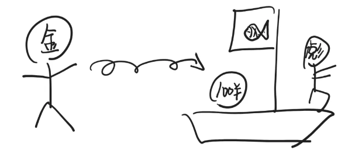
丧彪计划出海捕捞24个月。阿金的投资是赚还是赔，跟天气密切相关，天气有三种：晴朗，多云，风暴。
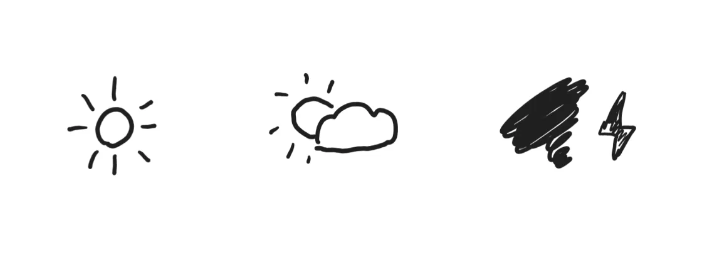
最好的情况是多云：天气一直在多云的范围内上下小幅度波动，丧彪就可以持续捕捞满24个月。
这种情况下，阿金的100元投资能翻4倍。
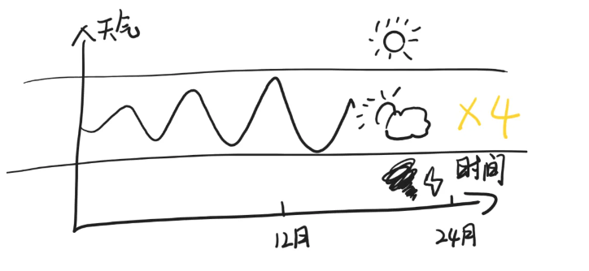
第二好的情况是晴朗，晴朗也可以立即捕到鱼，但是由于太阳太大会缺水，必须提前返航，无法捕捞满24个月。
这种情况下，阿金的100元投资可以翻2倍。
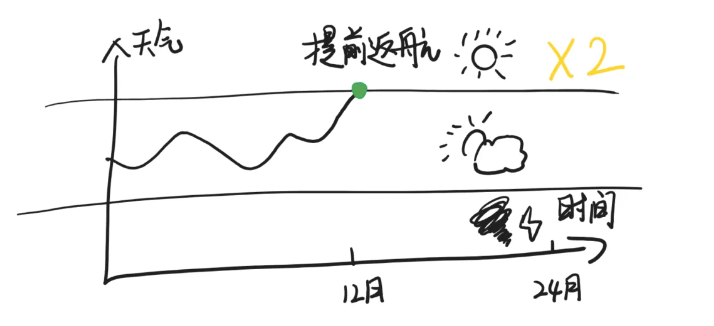
最糟糕的情况是风暴，天气一旦跌入风暴模式，且在第24个月内没有好转，船就会受损甚至无法返航，阿金的100元投资就会亏损，风暴越大亏损越大。
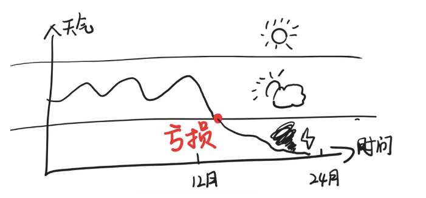
阿金是一个比较保守的投资者，尽管他知道天气在绝大多数时候都是多云，极少出现晴朗或风暴，但是他依然很担心。
他宁愿牺牲一部分收益，来换取收益的稳定。
阿金心想：如果这个世界上有一种“天气保险”就好了，他用一些钱买入这种保险，一旦天气出现风暴，丧彪的船损失惨重，保险公司就赔给自己一部分钱用来抵消自己的亏损。
这样自己就能稳赚不亏。
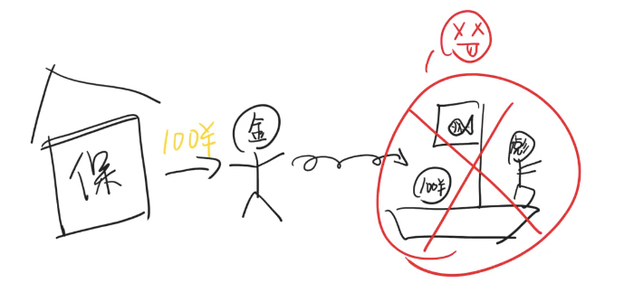
而如果丧彪顺利返航，阿金收益颇丰，保险公司也可以获得保险费，双赢。
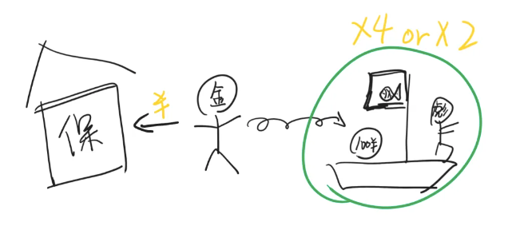
不过可惜，世界上并没有这种保险服务。
于是阿金决定自己包装出一个理财产品，吸引一些有钱人，让他们成为自己的“保险公司”。
阿金找到有100块钱的阿俗，说：我这里有一个叫“雪球”的理财产品，可以让你手上的钱像雪球一样，只要坡上不出现大坑，就能越滚越大。
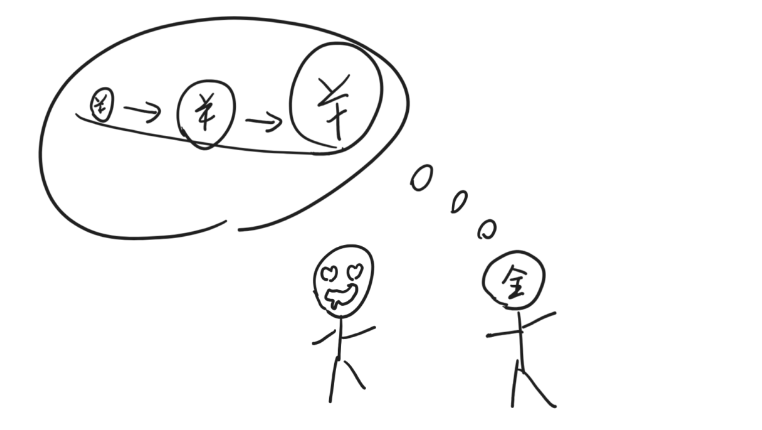
阿俗有些心动：愿闻其详。
阿金继续介绍：
雪球理财产品是这样的，如果天气在最近24个月一直在比较平稳的“多云”状态，24个月结束，你就能获得50%的收益。
如果提前进入“晴朗”状态，你就能获得25%左右的的收益，并且理财提前结束。
只有当天气进入在第24个月结束的时候依然是风暴状态，你的钱才会亏损。
“但是这种情况非常罕见。”阿金强调。
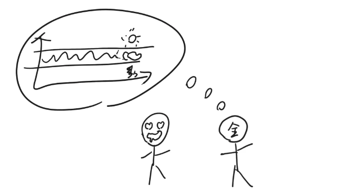
阿俗觉得收益还挺好，而且天气的确很少出现风暴，就签了理财协议。
于是，阿金成功地把风险和一部分收益一起转移给了阿俗，阿俗就成了阿金的“保险公司”，而阿金稳赚不赔。
后来在很长一段时间里，天气都是多云状态，阿俗和阿金都获得了不菲的收益。
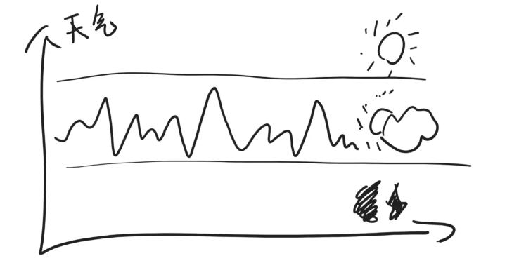
阿俗希望赚得更多，但他本钱有限，于是找到阿杠借钱（也就是所谓加杠杆）。他对阿杠说：我有100块钱，你再借给我100块钱，这样我就有200百块，我拿这两百块去理财，赢的话一起赚，我付给你利息，亏的话先亏我这100块，亏到只剩100块时不论什么情况我都把钱还你。
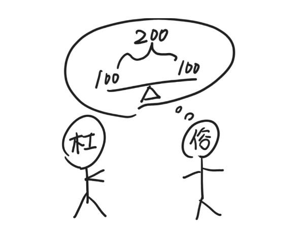
阿杠心想反正我又不亏，就答应了。于是阿俗就把200元投入到“雪球”理财中。
但天有不测风云，天气进入到“风暴”状态，并且在第24个月时依然没有恢复。
阿俗亏损50%。
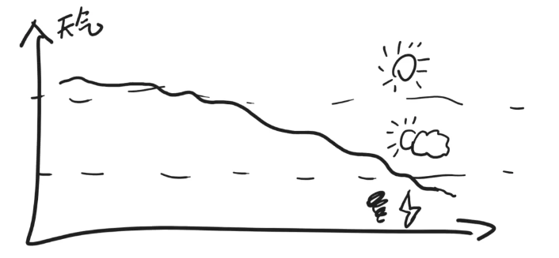
假如当初阿俗没有找阿杠借100元，此时他亏损50%应该还剩50元。
但是现在，阿俗的200元亏损50%，只剩下100元，按照约定，他必须把这100元给阿杠，于是阿俗自己就“归零”，也就是“爆仓”了。
故事讲完了。我们把“阿金”换成“金融机构”，把“天气”变化换成“指数”（一种股票市场整体表现的指标）波动，把“捕鱼”换成“炒股”，就明白了最近发生的“雪球爆仓”大概是怎么一回事。
金融机构希望指数小幅度波动（多云），这样他们就能通过类似于不停地高卖低买（持续捕捞），来赚到超高的收益。
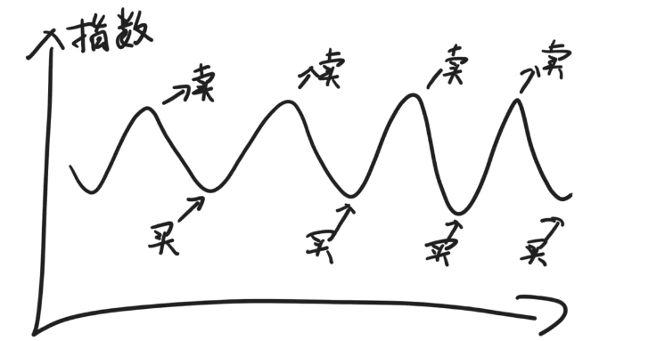
但他们害怕发生罕见的指数暴跌（风暴），于是包装出一个种叫“雪球”的高风险高收益理财产品，把自己的一部分收益和风险，转移给购买“雪球”理财产品的人。
如果购买雪球产品的人使用了杠杆，希望扩大收益，却正好遇到指数罕见的大跌，“雪球爆仓”就发生了。
以上。